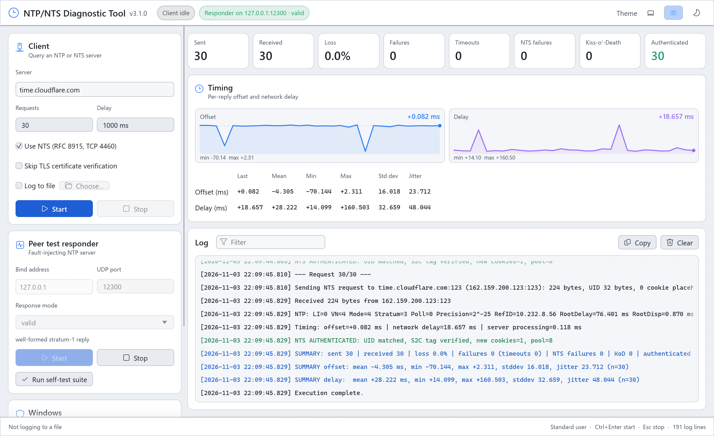

Real NTS
TLS 1.3 NTS-KE on TCP 4460 with ntske/1, exporter-derived keys, cookies and placeholders, and AEAD_AES_SIV_CMAC_256. Handles NTS-KE warnings and NTSN by re-keying.
A diagnostic client for NTPv4 and RFC 8915 Network Time Security, and a fault-injecting NTP responder for testing clients and peers. Real TLS 1.3 key exchange, authenticated NTP, live charts and a full protocol log.
Installer or portable zip · no runtime to install · no administrator rights needed
NTS-KE SUCCESS: TLSv1.3, ALPN=ntske/1, AEAD=15
received 8 cookie(s); NTP endpoint=…:123
NTS AUTHENTICATED: UID matched, S2C tag verified

TLS 1.3 NTS-KE on TCP 4460 with ntske/1, exporter-derived keys, cookies and placeholders, and AEAD_AES_SIV_CMAC_256. Handles NTS-KE warnings and NTSN by re-keying.
Every reply must come from the server queried and echo the request's timestamp. NTS replies must match the UID and verify the server-to-client tag.
Offset and delay charts, with last, mean, min, max, standard deviation and jitter. Calculated in exact 64-bit NTP fixed point, safe past 2036.
RATE, DENY, RSTR and NTSN are reported by name. You're also warned about LI=3, stratum 16 and large root dispersion.
19 modes, from Kiss-o'-Death codes, bad originate timestamps and truncated packets to replay, drops, delays and clock offsets. Use it to test how NTP clients and peers cope.
Every responder mode is checked over loopback, on the wire and against the tool's own client, in one click or ntpnts self-test.
Optional restart as Administrator, and a firewall rule for the responder port (Domain and Private only) with live status. It also warns when Windows Time holds UDP/123.
Light, dark or system theme, remembered settings, a filterable colour-coded log, and Ctrl+Enter / Esc shortcuts. Native Rust, starts instantly.
Download NTP-NTS-Diagnostic-Tool-3.1.0-setup.exe and run it. It installs for you only, into %LOCALAPPDATA%\Programs, adds a Start menu entry, and can be removed from Settings > Apps. Running a newer setup upgrades in place and keeps your settings.
Prefer nothing installed? The -portable.zip holds the same programs. Every release lists SHA-256 hashes in SHA256SUMS.txt.
time.cloudflare.com as the server.ntpnts.exe comes with the installer. query and self-test exit with code 1 on any failure, so they can gate a CI job.
ntpnts query time.cloudflare.com --nts -n 10 -d 500
ntpnts query 192.168.1.50:4460 --nts --insecure # lab server, self-signed certificate
ntpnts query pool.ntp.org # plain NTPv4
ntpnts respond --port 12300 --mode kod-deny # fault-injecting responder
ntpnts self-test # loopback regression suite500 requests at 5000 ms run for about 42 minutes. A finished run with Received and Authenticated equal to Sent and every failure counter at zero is good evidence the server handled NTS correctly for that period.
Pick a delay the server's rate limit allows: some NTS servers silently drop requests over their limit.
Rust. A Windows installer, the window and the ntpnts command line. Release notes · changelog
The earlier Python releases, including the Linux command line. Python releases · moving to 3.x